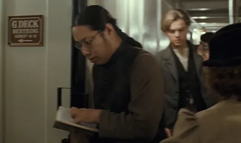
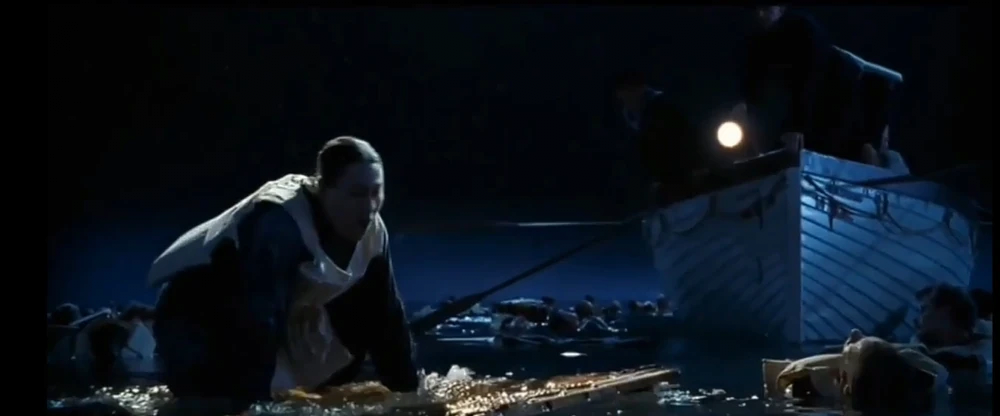
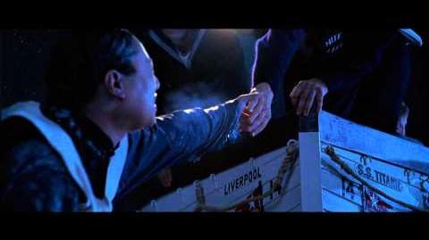
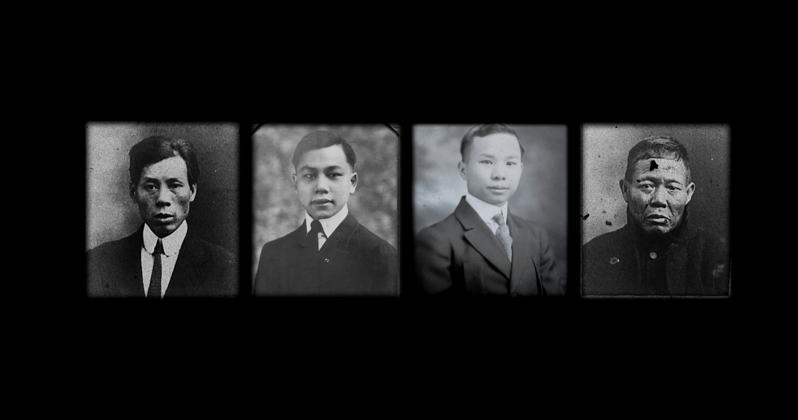

영화에서 잭과 친구 파브리치오가 3등실에서 객실을 찾을때 사전을 보면서 객실을 찾는 이 동양인 승객

삭제장면에서는 로즈 이전에 비슷하게 나무 문에 매달려 침몰 현장으로 돌아온 보트로부터 구조받는 장면이 나온다.
그런데 이 사람은 실존인물이다.
실존인물은 퐁윙산 (혹은 팡롱샨 Fang Lang, 方榮山)이라는 인물로 당시 18살이었다.
홍콩 출신으로 원래는 혼자만 여행한게 아니라 3등실에 같이 단체승선한 7명이 더 있었다. 이들의 직업은 화물선 선원으로 카리브해에서 직업을 찾으려고 했던 것으로 보인다.
침몰 당시 8명 중 5명은 구명보트에 뛰어내려 살아남았고, 남은 3명 중 2명은 살아남지 못했다.
당시 유일하게 현장으로 돌아온 5등 항해사 해롤드 로우(Harold Lowe)는 원래 맨 처음에는 대답도 움직임도 없어 죽은줄 알았고, 사방에 얼어죽어 떠다니는 시체가 널린데다가 이미 처음 건진 사람은 죽어버린지라 스트레스가 쌓여 구해주자는 의견에 "죽었는데 구해서 뭐하게. 저 쪽1바리(Jap) 말고도 구할 사람 많다고!"라는 식의 막말을 했다고 한다.

하지만 곧바로 마음을 바꿔 구해줬는데, 구해주고 나고서는 곧바로 생기가 되살아나서 중국어로 뭐라고 감사를 표했다. 이 사람이 당시 보트를 돌렸을 때 건져내어 살아남은 최초의 인물이 되었으며 영화에서 로즈의 구출 장면을 따왔다고 한다.
로우는 이 중국인이 선원들을 대신해서까지 열심히 노를 젓고 다른 생존자들을 돕는 것을 보고서는 감격해 이를 칭찬하고 자기가 너무 심한 말을 했다고 인정했다. 당시 현장으로 돌아온 보트가 건진 네 명 중 하나였다.

생존한 6명의 행방은 타이타닉 감독 제임스 카메론이 제작을 맡은 2021년 다큐멘터리 더 식스(The Six)에서 최근에야 밝혀졌다.
이들은 다른 생존자들과 달리 당시 미국 이민법때문에 바로 쫓겨났는데, 당시 일부 미국 언론에서는 생존자 증언에도 없는 여장을 했다거나 여자와 아이를 밀치고 탔다거나 하는 과장된 기사를 내보냈다. (이때문에 하필이면 일본인 승객 한명도 고국에서 같이 욕을 먹었다.) 남자가 여자와 아이 대신 살아남았다는 인식과 인종차별 때문이었고, 이 때문인지 이 사람들은 타이타닉에서 살아남았다는 것을 숨기며 살았다.
어쨌든 이들은 쿠바를 거쳐 영국으로 돌아갔고, 산전수고를 겪다가 각각 다른 나라로 이민을 갔는데 이중 팡롱샨은 개명해서 다시 미국으로 이민을 온다.
(노년의 모습)
이 사람의 아들 톰 퐁(Tom Fong)은 현재 미국 위스콘신에서 중국 음식점을 운영한다고 하며, 늦둥이로 태어났다.
본인에게도 배가 침몰하는 사고에서 살아남았다고만 밝혔을 뿐 그 배가 바로 그 타이타닉호라고는 말하지 않았다고 한다. 어쨌든 실존 인물은 이후 여생을 보내다가 1985년 노환으로 향년 91세를 일기로 타계했다
막짤은 고기를 굉장히 잘 굽게 생겼어..